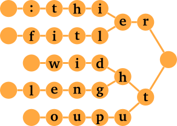

Autocorrection with QMK
Pascal Getreuer, 2021-10-30 (updated 2022-11-28)
🚀 Launched
Autocorrect is now a core QMK feature! It was released on 2022-11-26. Update your QMK set up and see QMK Autocorrect. Or if you want, you may continue to use the userspace implementation described in this page.
Overview
Some words are more prone to typos than others. I have a habit of typo-ing ouput and fitler. This post describes a rudimentary autocorrection implementation that runs on your keyboard with QMK.
The animation below shows the effect as I type aparent. As I press the final t,
the autocorrection feature detects the typo and automatically sends keys
to correct it:
Features:
It runs on your keyboard, so it is always active no matter what software.
Low resource cost: for an autocorrection dictionary of 71 entries, firmware size cost is 1672 bytes and average CPU cost per key press is about 20 µs.
It is case insensitive. It corrects Fitler to
Filterand FITLER toFILTER.It works within words. It corrects fitlered, fitlering, and useful for programming, within longer identifiers like DesignButterworthFitler.
Limitations: Running autocorrection on the keyboard comes with some constraints. It is rudimentary like I said:
It is limited to alphabet characters
a–z, apostrophes', and “word breaks.” No accented or Unicode letters; I’m sorry this probably isn’t useful for languages besides English.It does not follow mouse or hotkey driven cursor movement.
Add autocorrection to your keymap
There are a few steps to the implementation. Please bear with me.
Step 1: In the directory containing your
keymap.c, create a features subdirectory and
copy the following files there:
- autocorrection.c: the autocorrection engine.
- autocorrection.h: corresponding header file.
- autocorrection_data.h: file encoding the typos to be corrected. This is a practical example, but it can be changed; see below for details.
Step 2: In your keymap.c file, call
autocorrection from your process_record_user() function
as
#include "features/autocorrection.h"
bool process_record_user(uint16_t keycode, keyrecord_t* record) {
if (!process_autocorrection(keycode, record)) { return false; }
// Your macros...
return true;
}Step 3: In your rules.mk, add
SRC += features/autocorrection.cTaking autocorrection for a test drive
With the above flashed to your keyboard, try for instance typing the
misspelled word ouput. The instant
you type the final t, the word should be speedily
autocorrected to output. As further tests, try becuase and invliad.
Here is the full list of typos corrected using the provided
autocorrection_data.h file. : is a special
character denoting a word break. See below for how to change the
autocorrection dictionary.
Firmware size and CPU costs
I am anxiously aware that a keyboard microcontroller has limited resources. So I was sure to measure how much memory and CPU time autocorrection consumes during development. These measurements are for the example autocorrection dictionary as used above, which has 71 entries:
Firmware size: Autocorrection increases my firmware size by a total of 1672 bytes. Breaking that down, 1120 bytes are for the
autocorrection_dataarray and 552 bytes for the autocorrection code.CPU time: On my Elite-C microcontrollers, the average CPU time for
process_autocorrectionto process an alpha key press is around 20 µs. Consider this a rough order-of-magnitude cost. Processing cost increases (more trie nodes are visited) when recent input is close to a known typo, with the max being when a long typo is matched.
The costs are not free but reasonable. For reference, the firmware size cost for mouse keys is 2124 bytes and the CPU time to process a layer switch is about 70 µs, so autocorrection is cheaper than those things. Of course, the cost scales with the size of the autocorrection dictionary, so keep that in mind if you add a lot more entries.
Side note: as
Thomas Baart describes, link time optimization (LTO) helps a lot to
reduce firmware size. In your rules.mk, add:
LTO_ENABLE = yes
How does it work?
The function process_autocorrection maintains a small
buffer of recent key presses. On each key press, it checks whether the
buffer ends in a recognized typo, and if so, automatically sends
keystrokes to correct it.
The tricky part is how to efficiently check the buffer for typos. We don’t want to spend too much memory or time on storing or searching the typos. A good solution is to represent the typos with a trie data structure. A trie is a tree data structure where each node is a letter, and words are formed by following a path to one of the leaves.

Since we search whether the buffer ends in a typo, we store the trie writing in reverse. The trie is queried starting from the last letter, then second to last letter, and so on, until either a letter doesn’t match or we reach a leaf, meaning a typo was found.
Changing the autocorrection dictionary
The file autocorrection_data.h encodes the typos to
correct. While you could simply use the version of this file provided
above for a practical configuration, you can make your own to
personalize the autocorrection to your most troublesome typos:
First, create an autocorrection dictionary
autocorrection_dict.txt, like:thier -> their dosen't -> doesn't fitler -> filter ouput -> output widht -> widthFor a practical 71-entry example, see autocorrection_dict.txt. And for a yet larger 400-entry example, see autocorrection_dict_extra.txt.
The syntax is
typo -> correction. Typos and corrections are case insensitive, and any whitespace before or after the typo and correction is ignored. The typo must be only the charactersa–z,', or the special character:representing a word break. The correction may have just about any printable ASCII characters.Use the make_autocorrection_data.py Python script to process the dictionary. Put
autocorrection_dict.txtin the same directory as the Python script and run$ python3 make_autocorrection_data.py Processed 71 autocorrection entries to table with 1120 bytes.The script arranges the entries in
autocorrection_dict.txtinto a trie and generatesautocorrection_data.hwith the serialized trie embedded as an array. The .h file will be written in the same directory.Finally, recompile and flash your keymap.
The generated C header looks like this:
autocorrection_data.h
Troubleshooting
Avoiding false triggers
By default, typos are searched within words, to find typos
within longer identifiers like maxFitlerOuput. While this is useful, a
consequence is that autocorrection will falsely trigger when a typo
happens to be a substring of a correctly-spelled word. For instance, if
we had thier -> their as an entry, it would falsely
trigger on (correct, though relatively uncommon) words like “wealthier”
and “filthier.”
The solution is to set a word break : before and/or
after the typo to constrain matching. : matches space,
period, comma, underscore, digits, and most other non-alpha
characters.
| Text |
thier
|
:thier
|
thier:
|
:thier:
|
|---|---|---|---|---|
| see thier typo | matches | matches | matches | matches |
| it’s thiers | matches | matches | no | no |
| wealthier words | matches | no | matches | no |
:thier: is most restrictive, matching only when
thier is a whole word.
The make_autocorrection_data.py script makes an effort
to check for entries that would false trigger as substrings of correct
words. It searches each typo against a dictionary of 25K English words
from the english_words
Python package, provided it’s installed.
Overriding autocorrection
Occasionally you might actually want to type a typo (for instance,
while editing autocorrection_dict.txt) without being
autocorrected. Here is a way to do that:
- Begin typing the typo.
- Before typing the last letter, press and release the Ctrl or Alt key.
- Type the remaining letters.
This works because the autocorrection implementation doesn’t understand hotkeys, so it resets itself whenever a modifier other than shift is held.
Acknowledgements
Huge thanks to @drashna and @filterpaper on GitHub for feedback, ideas, and improvements to make autocorrection better, and to @drashna for leading the effort to add autocorrection as a core QMK feature.
Closing thoughts
Based on my own use, an autocorrection dictionary of a few dozen entries is enough to help in day-to-day writing. On the other hand, it is of course far from comprehensively checking that every word is spelled correctly. Keyboard microcontrollers might not have the resources check against a full English dictionary any time soon, but a lot of editors and other software have good integrated spell check features.
I suggest to enable and use spell check in combination with autocorrection:
Sublime: Open the View menu and enable “Spell Check.”
Eclipse: Open the Window menu, click Preferences, and search for “Spelling.”
Vim: Type
:set spell, and misspellings will be highlighted. Use]sto jump to the next misspelled word andz=to get suggested corrections for the word under the cursor. See the :help spell documentation. Vim also has an abbreviations feature that can autocorrect misspellings (see :help abbreviations).Emacs: Use
M-x flyspell-modeto enable Flyspell mode in the current buffer. Or for programming, useM-x flyspell-prog-modeto check comments and strings only. See the spelling documentation. There is also an abbreviations feature that can do autocorrection.
Some useful resources:
Wikipedia has a large list of common typos.
EmacsWiki has another list of typos.
You can find data on English word frequencies at www.wordfrequency.info.
Appendix: Trie binary data format
This section details how the trie is serialized to byte data in
autocorrection_data. You don’t need to care about this to
use this autocorrection implementation. But I document it for the record
in case anyone is interested in modifying the implementation, or just
curious how it works.
What I did here is fairly arbitrary, but it is simple to decode and gets the job done.
Encoding
All autocorrection data is stored in a single flat array
autocorrection_data. Each trie node is associated with a
byte offset into this array, where data for that node is encoded,
beginning with root at offset 0. There are three kinds of nodes. The
highest two bits of the first byte of the node indicate what kind:
00⇒ chain node: a trie node with a single child.01⇒ branching node: a trie node with multiple children.10⇒ leaf node: a leaf, corresponding to a typo and storing its correction.
Branching node. Each branch is encoded with one byte
for the keycode (KC_A–KC_Z) followed by a link
to the child node. Links between nodes are 16-bit byte offsets relative
to the beginning of the array, serialized in little endian order.
All branches are serialized this way, one after another, and
terminated with a zero byte. As described above, the node is identified
as a branch by setting the two high bits of the first byte to
01, done by bitwise ORing the first keycode with 64.
keycode. The root node for the above figure would be serialized
like:
+-------+-------+-------+-------+-------+-------+-------+
| R|64 | node 2 | T | node 3 | 0 |
+-------+-------+-------+-------+-------+-------+-------+Chain node. Tries tend to have long chains of
single-child nodes, as seen in the example above with
f-i-t-l in fitler. So to
save space, we use a different format to encode chains than branching
nodes. A chain is encoded as a string of keycodes, beginning with the
node closest to the root, and terminated with a zero byte. The child of
the last node in the chain is encoded immediately after. That child
could be either a branching node or a leaf.
In the figure above, the f-i-t-l chain is encoded as
+-------+-------+-------+-------+-------+
| L | T | I | F | 0 |
+-------+-------+-------+-------+-------+If we were to encode this chain using the same format used for
branching nodes, we would encode a 16-bit node link with every node,
costing 8 more bytes in this example. Across the whole trie, this adds
up. Conveniently, we can point to intermediate points in the chain and
interpret the bytes in the same way as before. E.g. starting at the
i instead of the l, and the subchain has the
same format.
Leaf node. A leaf node corresponds to a particular
typo and stores data to correct the typo. The leaf begins with a byte
for the number of backspaces to type, and is followed by a
null-terminated ASCII string of the replacement text. The idea is, after
tapping backspace the indicated number of times, we can simply pass this
string to QMK’s send_string_P function. For fitler, we need to tap backspace 3 times (not
4, because we catch the typo as the final ‘r’ is pressed) and replace it
with lter. To identify the node as a leaf, the two high
bits are set to 10 by ORing the backspace count with
128:
+-------+-------+-------+-------+-------+-------+
| 3|128 | 'l' | 't' | 'e' | 'r' | 0 |
+-------+-------+-------+-------+-------+-------+Decoding
This format is by design decodable with fairly simple logic. A 16-bit
variable state represents our current position in the trie,
initialized with 0 to start at the root node. Then, for each keycode,
test the highest two bits in the byte at state to identify
the kind of node.
00⇒ chain node: If the node’s byte matches the keycode, incrementstateby one to go to the next byte. If the next byte is zero, increment again to go to the following node.01⇒ branching node: Search the branches for one that matches the keycode, and follow its node link.10⇒ leaf node: a typo has been found! We read its first byte for the number of backspaces to type, then pass its following bytes tosend_string_Pto type the correction.